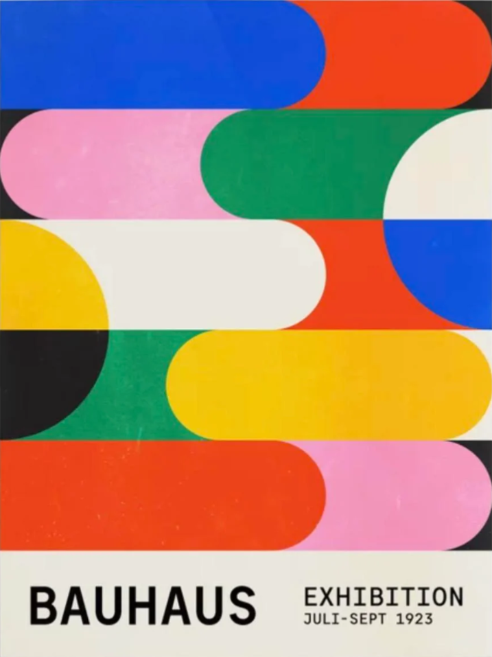
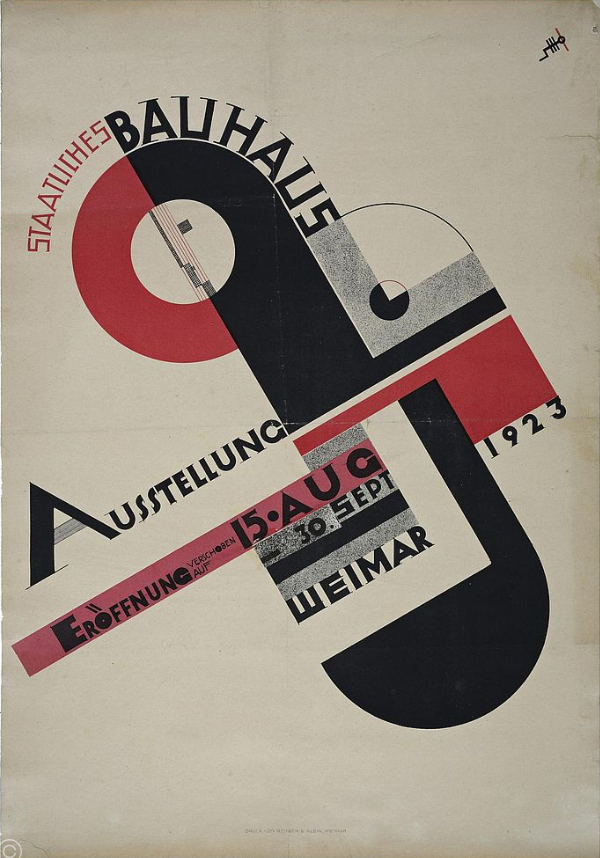
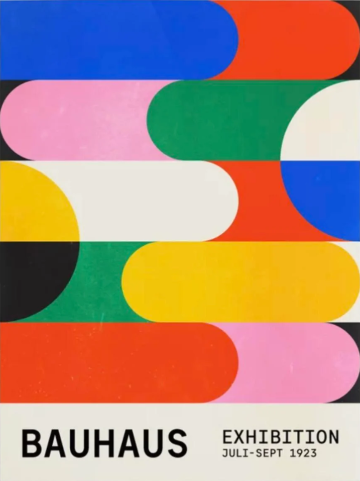
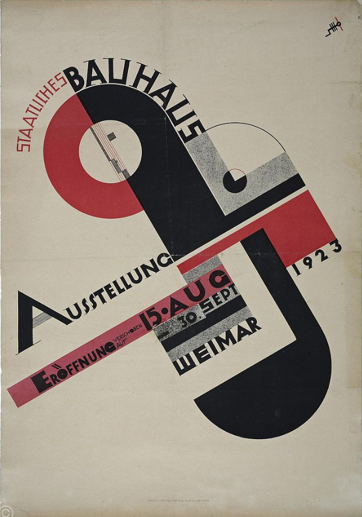

Historical Foundations

Everything is inspired by something else. A sentiment that is often illustrated by the documented trend in art and design historically. An important aspect of design is adaptation, and to adapt a style to fit a new context, it is important to understand its foundation.
In this project, I explored the historical foundations of three graphic design to understand and interpret the prominent styles associated and incorporate them in a design for a music band's concert poster.
The three styles I chose to explore were Bauhaus, Swiss Modern Typographic Style, and the Brutalist style. I aim to capture the essence of the movements while adapting elements to fit the band's aesthetic.
The band I am designing for is called 'Eastman Noise', an eclectic high energy fictional rock band based in Rochester, NY. Throughout my designs, while focusing on the key elements of each style, I also aimed to capture energy and rhythm through the use of dynamic typographic layouts that flow and lead the eye across the posters.
Bauhaus Style
 



The Bauhaus style is characterised by its use of geometric shapes, bold colours, and a focus on functionality. The design I created in this style incorporates these elements, with a strong emphasis on typography, using the Bauhaus font, and a limited but bold colour palette. The use of geometric shapes and bold colours creates a visually striking design that captures the energy of the band while paying homage to the Bauhaus movement and taking inspiration from the examples above.
Swiss Style

The Swiss Style is characterised by its use of grid systems, sans-serif typography, alignment and a focus on clarity and simplicity. The design I created in this style incorporates these elements, with a strong emphasis on typography, using the Helvetica font. The use of grid systems and sans-serif typography, along with inspiration from the examples above allowed me to capture the essence of the Swiss style, and adapt it to the band's identity with the 'noise' halftone effect.
Brutalist Style


The Brutalist movement was primarily architectural based, with a focus on raw, exposed materials and a sense of ruggedness. In graphic design, this translates to a focus on bold typography, an earthy colour palette, and a sense of rawness and authenticity. My design in this style incorporates these elements, with a strong emphasis on typography and experimental layout, and a limited colour palette of earthy tones. The primarily imagery follows the movement's architectural background. Much like the examples above, the design captures the essence of the Brutalist style while adapting it to focus the band's uniqueness and experimental nature.
Final Designs